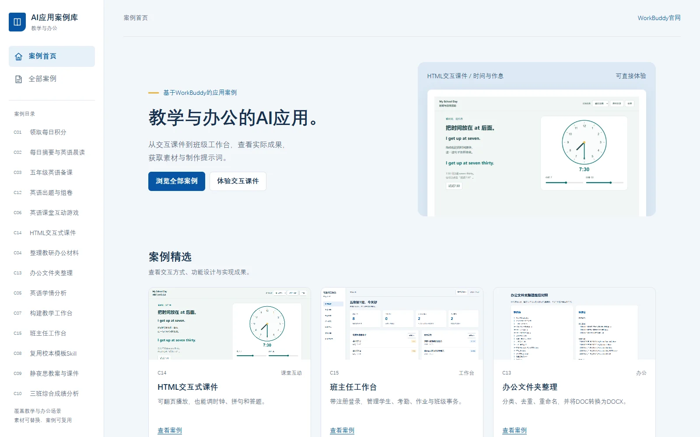

作品展示
六个已上线的网站，涵盖教学、工具、学习、游戏与科研。
案例精选
查看交互方式、功能设计与实现成果。

案例库
15个案例，涵盖备课出题、办公整理、学情分析、课堂互动与工作台。
领取每日积分
用一句话领取积分，并设置每日自动领取。
C01每日摘要与英语晨读
把三则材料整理成摘要和五年级英语晨读。
C02五年级英语备课
围绕My School Day做一份40分钟教案和分层练习单。
C03英语出题与组卷
调用“K12试题专家”，制作一份15分钟英语小测和教师答案。
C12英语课堂互动游戏
把词库做成可投影、可练习的英语小工具。
C06HTML交互式课件
把一个知识点做成可翻页播放、可以操作练习的HTML课件。
C14整理教研办公材料
将会议记录整理为通知和任务表。
C04办公文件夹整理
整理一个混乱文件夹：分类、去重、重命名，并将DOC转成DOCX。
C13英语学情分析
比较两次测评，找到下周教学值得关注的地方。
C05构建教学工作台
用一个页面管理导入、统计和成绩备份。
C07班主任工作台
制作带注册登录的班主任工作台，管理学生、考勤、作业和班级事务。
C15复用校本模板Skill
把常用的教学材料规范保存下来，换主题继续用。
C08静夜思教案与课件
用古诗材料制作朗读活动和课堂课件。
C09三班综合成绩分析
核对班级排名，比较四科与三次测评的变化。
C10数学函数与几何交互
用参数变化和即时反馈组织数学探究。
C11没有找到这个案例
试试“英语”“出题”或“工作台”。